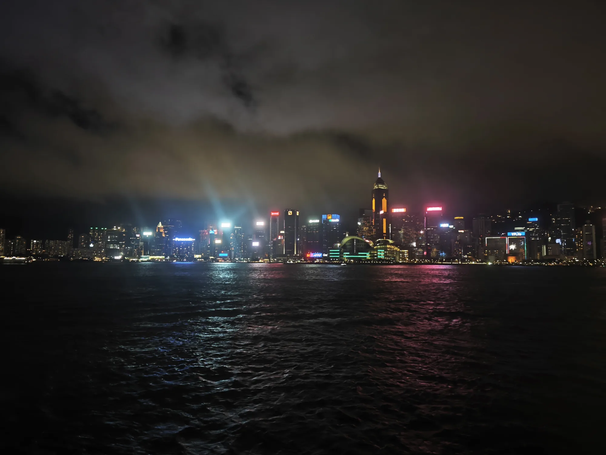

HONG KONG
香港
香港大学、中上环的旧建筑与街道，和维多利亚港的夜色。
2024.05.31 — 06.02航班 · 港铁 · 电车 · 步行
香港大学、中上环的旧建筑与街道，和维多利亚港的夜色。
放大地图查看照片
航班 · 港铁 · 电车 · 步行航班铁路 / 轨道交通
公共交通按线路或途经站点绘制，均为行程示意；未记下的具体班次留空。航班连线非实际飞行轨迹。
每日记录 3 天
DAY 01
抵达香港
航班、机场快线乘机抵达香港，随后乘机场快线进入市区。
→→
DAY 02
香港大学 · 中上环 · 尖沙咀
港铁、步行上午走过香港大学，午后到中上环与大馆，傍晚来到尖沙咀海滨。
→→→→→
DAY 03
电车 · 机场返程
电车、港铁、航班沿港岛街道乘电车，随后前往机场返程。
→→
飞往香港途中穿过暮色05.31 · 18:56 飞往香港途中香港街头的夜色05.31 · 22:31 中环与上环电车穿行在楼宇之间06.01 · 09:34 中环与上环香港大学的拱廊06.01 · 12:04 香港大学大馆旧建筑内的走廊与楼梯06.01 · 13:47 大馆中环街头的黄色方格路口06.01 · 15:39 中环与上环高楼之间的连廊06.01 · 15:46 中环与上环K11 MUSEA 的室内空间06.01 · 17:05 尖沙咀海滨与 K11 MUSEA九龙公园里的喷泉06.01 · 18:45 九龙公园隔着维多利亚港看香港夜景06.01 · 19:33 尖沙咀海滨与 K11 MUSEA夜色中的尖沙咀钟楼06.01 · 19:51 尖沙咀钟楼港岛街道上的双层电车06.02 · 09:20 中环与上环沿电车轨道穿过港岛街区06.02 · 10:19 中环与上环机场接驳沿线的海港06.02 · 11:28 机场列车沿途从香港机场启程返航06.02 · 14:13 香港国际机场 暂无照片。